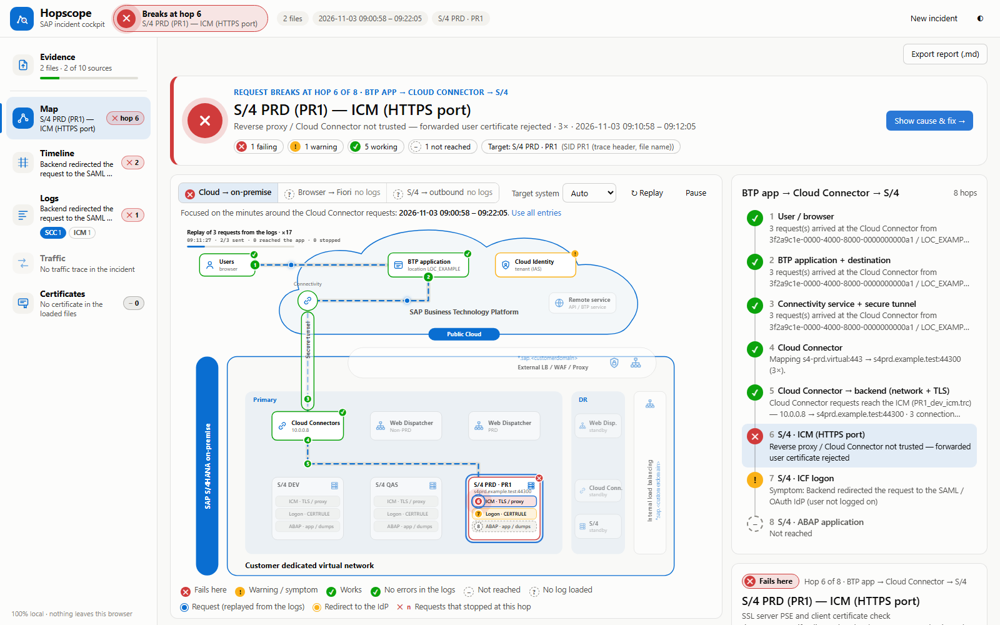

Find the hop where an SAP request breaks
Hopscope reads the logs of one incident — SAP Cloud Connector, ICM, Web Dispatcher, SM21, ST22, SM59, certificates — and shows on a landscape map which hop of the request fails, with the evidence lines and the fix.
A request from an SAP BTP application to SAP S/4HANA crosses up to eight hops: user, BTP application, Connectivity service, Cloud Connector, network and TLS, ICM, logon and the ABAP application. Each hop writes its own log, in its own format, often on a system another team owns. Hopscope puts them on one page and one time line.

Everything runs in your browser. There is no server and no upload; the files you add stay on your computer. See Your data.
Quick start
- Open the cockpit. Use the cockpit in Microsoft Edge or Google Chrome. Offline use works too: download the files and open
index.html. - Add the evidence. The Evidence page is the one place for files. Drop files, a folder or a
.zip, choose them, or paste text (PEM certificates,sapgenpseoutput, an SM59 result, copied log lines). Try the example loads a synthetic principal-propagation case. - Read the verdict. After the first files the cockpit opens the Map. The top bar names the failing hop, for example Breaks at hop 6 · S/4 PRD — ICM (HTTPS port).
- Drill down and export. Click a hop for the cause, the evidence and the fix. Each workspace exports its own report (Markdown, CSV, HAR, PEM).
Hopscope recognises each file by its name and content. When a file is read as the wrong source, change Read as in the Evidence file list and every workspace analyses it again.
What to collect
Reproduce the problem with the traces switched on, note the time, and collect the files below. The Evidence page shows the same checklist and which sources are still missing.
| Source | Shows | How to collect |
|---|---|---|
| Cloud Connector logs | Tunnel, access control, principal propagation, TLS to the backend | Cloud Connector → Log and Trace Files → loggers ALL (and TLS trace) → reproduce → Download All (.zip) |
| Cloud Connector traffic trace | Every HTTP request and response through the tunnel (302 to the IdP, 4xx, 5xx) | Log and Trace Files → payload trace on → reproduce → tunnel_traffic_*.trc |
ICM trace (dev_icm) | TLS, client certificates, trusted reverse proxy, ICM resources | SM51 → the instance behind the Cloud Connector mapping → SMICM → trace level 2 → reset → reproduce → download |
| Web Dispatcher trace | Routing, backend servers, SSL re-encryption | dev_webdisp from the Web Dispatcher work directory (trace level 2) |
| System log (SM21) | Logon failures, SSL, ICM and communication errors | SM21 → time range → Export → Spreadsheet or Text with Tabs |
| ABAP dumps (ST22) | Runtime errors behind HTTP 500 and timeouts | ST22 → time range → Export → Spreadsheet or Text with Tabs |
| Connection test (SM59) | Outbound calls from S/4: SSL, network, HTTP status | SM59 → destination → Connection Test → save the result as text, or paste it |
| Certificates | Expiry, chains, trust, Cloud Connector system certificate vs. CA list | STRUST export (.cer, .crt, .pem), PSE files, the Cloud Connector sys_cert.der, or pasted PEM / sapgenpse output |
| Work process traces | Work process restarts, database, memory | SM50 → work process → Trace → Display File, or AL11 → DIR_HOME (dev_w*, dev_disp) |
| HTTP access logs | Status code per request (401, 403, 5xx) | icm/HTTP/logging_<n> or the Web Dispatcher access log |
dev_icm of another application server does not contain its requests; Hopscope warns when the trace belongs to another host.Reading the map
The map draws a reference SAP S/4HANA on-premise landscape with SAP BTP: application, Connectivity service and Cloud Identity in the cloud; secure tunnel, Cloud Connectors, load balancing, Web Dispatchers and the S/4 systems (DEV, QAS, PRD) with ICM, logon and ABAP layers in the customer network; and a DR site. Pick the request path above the map:
- Cloud → on-premise: a BTP application through the Cloud Connector.
- Browser → Fiori: a browser through the Web Dispatcher.
- S/4 → outbound: SM59 destinations and the ICM as HTTP client.
The target system (DEV, QAS or PRD) comes from the SID in the trace header, the file name or the host name; change it with Target system. Every hop gets one of these verdicts:
- ✕Fails here: the cause is at this hop.
- !Warning or symptom: something is wrong, or this is a consequence of an earlier hop.
- ✓Works: the logs prove the hop worked, for example "3 requests arrived" or "backend connection opened".
- ✓No errors in the logs: a loaded log covers the hop and shows nothing wrong.
- –Not reached: behind the failing hop.
- ?No log loaded: the inspector says which log covers this hop and how to collect it.
Findings sit on the hop where the error is, not where it was logged. An IdP redirect logged by the Cloud Connector belongs to the S/4 logon, and is marked as a symptom when an earlier hop already fails.
Request flows and the analysis window
One Cloud Connector usually carries several applications. Request flow lists them (subaccount and system mapping), each with its own verdict; pick one to see only its requests. Without a chosen time range, the map analyses the minutes around the Cloud Connector requests, because dev_icm files often cover weeks of unrelated errors. Use all entries switches back.
Request replay
When the logs contain Cloud Connector requests, the map replays them: one packet per request, in their real order and spacing, sped up. Each packet ends at the hop where that request stopped.
- At a failing hop the packet bursts red and the line ends. Nothing flows past it, and the hop shows how many requests stopped there (✕ 12).
- Requests that got through end green at the application (✓ 22).
- A request the logon redirected to the identity provider bounces to Cloud Identity (302).
Where a request stopped comes from its own evidence: an ICM "Reject untrusted forwarded certificate" at its time (or the forwarded certificate accepted, so it passed), its IdP redirect, its own Cloud Connector entries (connection ID), or a backend connection that was never opened. The panel at the top left shows the replay clock in log time and how many requests were sent, got through or stopped. Paths without request-level logs say so, and their packets only show the verdict.
Workspaces
- Map: where the request breaks, the evidence and the fix, with the request replay.
- Timeline: all sources on one time line in SAP server time, correlated incidents across sources, certificate expiry markers.
- Logs: every entry of the Cloud Connector, ICM and Web Dispatcher logs with filters, error groups, root-cause exceptions and a knowledge base of known patterns.
- Traffic: the Cloud Connector traffic trace decoded into HTTP requests and responses, with login-redirect detection, masking of sensitive headers and HAR export.
- Certificates: PSE, CRT, CER, PEM, P7B and keystores; chains verified by signature, trust check against a PSE, the Cloud Connector system certificate against the backend's CA list, expiry.
Playbook: principal propagation through the Cloud Connector
Symptom: the BTP application gets HTTP 302, 401 or 405 from an OData service; the backend sends the request to the SAML identity provider instead of logging on the user.
- Cloud Connector: loggers ALL, TLS trace on, payload trace on. Reproduce, then Check availability of internal host for the mapping. Download All, then switch the traces off.
- SMICM trace level 2 on the instance behind the mapping (SM51 → that instance). Reproduce again and download
dev_icm. - Add both to Hopscope. The Map shows which hop breaks: tunnel, Cloud Connector, TLS to the backend, ICM trusted reverse proxy, or logon.
- If the ICM fails: the finding Reverse proxy / Cloud Connector not trusted gives the exact
icm/trusted_reverse_proxy_<n>value for the certificate the Cloud Connector really presents. Check the DEFAULT profile history too: an automatically generated import profile can drop an entry that was never activated. - If the logon fails: check the certificate rule (CERTRULE), the user (exists, not locked, e-mail unique) and
login/certificate_mapping_rulebased. - After the fix, collect the logs again. The replay should show the requests reaching the application.
Playbook: ICM "SSSLERR_CLIENT_CERT_UNTRUSTED"
- SMICM → trace level 3 → reset → reproduce → save
dev_icm→ set the level back. - Logs (ICM): the finding Client certificate not trusted lists subject, issuer and peer.
- Collect the SSL server PSE of the port and the client certificate with its chain.
- Certificates: load both and run the trust check with the SSL server PSE. It names the required CA (name, key ID, serial) or the expired chain element.
- STRUST: import the certificate into the SSL server PSE on all instances, then restart the ICM (SMICM → Exit Soft → Global) and verify with a new trace.
Your data
Hopscope reads your files with the browser's file API and analyses them in memory, in your browser tab. It sends nothing to a server, loads no third-party scripts, and sets no cookies. Closing or reloading the tab discards the loaded files. Details are in the privacy policy.
Limits and FAQ
Which browsers?
Built and tested with Microsoft Edge. Other Chromium-based browsers, such as Google Chrome, should behave the same.
How large can the files be?
Large traces work but take time: a 33 MB Cloud Connector trace takes about 75 seconds on a business laptop.
Why do the times differ from my SAP GUI?
The time base is SAP server time. The server offset comes from the HTTP Date headers in ICM and Web Dispatcher traces; Cloud Connector logs (UTC) are converted. You can set the server time zone and shift single files in the Timeline workspace.
Is the verdict always right?
No tool reads every situation correctly. Hopscope matches known log patterns and shows the evidence it used, so you can check it. Verify findings before you change a production system, and follow your change process. See the disclaimer.
Does it replace SAP Support?
No. When the cause is a product defect, open an incident with SAP. Hopscope helps you open it in the right component, with the failing hop and the evidence attached.
Can I check the engine?
Yes: tests/selftest.html runs the parser and rule self-test in your browser with synthetic data.